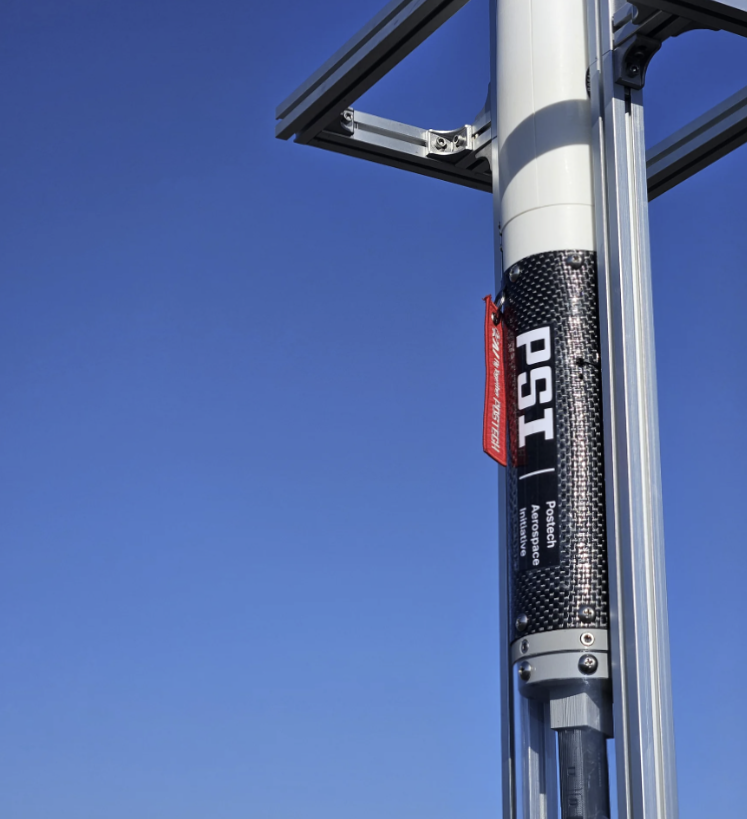

PSLV-I
PSLV
POSTECH Science Launch Vehicle
포스텍 학생들이 설계하고 제작하는 사운딩 로켓 프로젝트
동체와 비행 전자장치, 회수 장치를 하나의 기체로 만들고 지상 시험과 비행으로 확인합니다.

시스템 엔지니어링

비행 전자장치
비행 컴퓨터는 센서 측정과 운동 추정, 회수 장치 구동 판단을 맡습니다. 기체 내부 기록과 무선 통신으로 비행을 살펴보고, 비행이 끝난 뒤에도 데이터를 검토합니다.
GitHub에서 Avionics 보기- 비행 컴퓨터
- 듀얼 코어 Portenta H7에서 비행 연산과 저장·무선 전송을 나눕니다. M7은 센서를 읽고 운동을 추정하며 비행 상태와 회수 장치 구동을 판단합니다. M4는 microSD 기록과 XBee 원격 측정을 담당합니다.
- 센서와 상태 추정
- IMU로 자세와 가속도를, BMP390으로 기압을 측정합니다. 수직 무향 칼만 필터(UKF)는 가속도와 기압 고도로 운동을 추정합니다. GNSS 위치는 별도로 기록하며 이 수직 필터의 입력으로 사용하지 않습니다.
- 지상국과 비행 기록
- 수신한 데이터로 자세, 비행 상태와 고도 그래프를 표시하고 저장된 로그를 재생해 검토합니다. 지상 기록에는 실제 수신한 샘플만 남으므로, 무선 수신이 끊긴 구간은 기체 내부 기록과 다를 수 있습니다.
비행 재구성
29.38초 구간의 수신 샘플 343개를 살펴보세요. 기록을 재생하거나 원하는 시점을 선택해 추정 고도와 수직 속도, 비행 상태를 확인할 수 있습니다.
아카이브 원격 측정 발췌 기록 · 비행 날짜와 기체는 확인되지 않았습니다.
경과 시간0.00 s
추정 고도1.305 m
수직 속도0.463 m/s
기록 상태PRELAUNCH
기록 그래프와 요약입니다.
발췌 기록의 요약과 한계 보기
| 샘플 | s | m | m/s | 상태 |
|---|---|---|---|---|
| 시작 | 0.00 | 1.305 | 0.463 | PRELAUNCH |
| 수신 최대 고도 | 11.44 | 186.632 | 3.579 | LAUNCH |
| 끝 | 29.38 | 45.841 | -6.764 | DEPLOY |
시간은 이륙 시점이 아닌 발췌 구간의 시작을 기준으로 합니다. 실시간 화면이 아닌 기록이며 발사 영상과 동기화되어 있지 않습니다.
186.632미터는 이 발췌 기록에서 수신된 고도 추정값의 최대치이며 기체 성능 제원이 아닙니다. 최종 상태는 DEPLOY로, 이 기록만으로 착륙이나 회수 완료를 확인할 수 없습니다.
연소 시험
시험별 추력과 압력 측정값, 시험 조건을 살펴보세요.
주요 결과
| 날짜 | 최대 추력 | 총 임펄스 | 연소 시간 | 최대 압력 |
|---|---|---|---|---|
| 2026-07-16 | 323.79 N | 484.66 N s | 2331.2 ms | 38.018 bar |
| 2026-05-28 | 174.19 N | 366.33 N s | 2818.7 ms | 42.496 bar |
| 2026-04-08 | 203.00 N | 387.07 N s | 2687.5 ms | 44.304 bar |
| 2026-04-03 | 174.42 N | 368.74 N s | 3287.5 ms | 39.241 bar |
비행
PSI 아카이브의 발사 영상과 탑재 영상입니다.
영상을 불러오지 못했습니다. 영상 파일을 직접 열어 보세요. 이 영상 파일 열기
실측 결과나 제작 기체의 도면이 아닙니다.
관련 연구
정밀 착륙
현재 정밀 착륙 연구는 기존 제어기에 학습된 잔차 보정을 결합합니다. 시뮬레이션 기반 가능성 검토 단계이며 실제 비행 검증은 앞으로의 과제입니다.